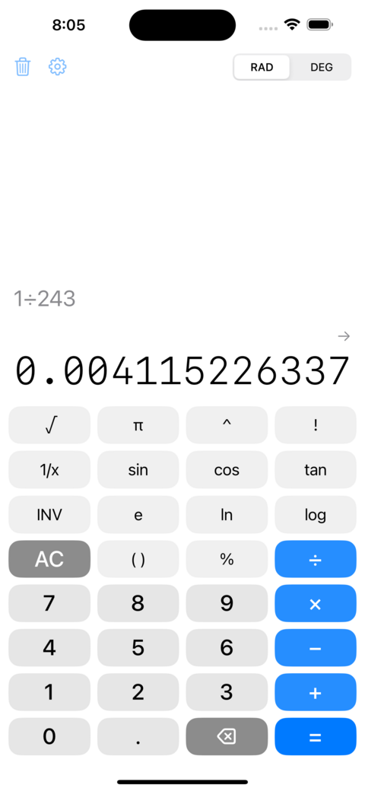

Ordinary calculators round. Constructive Calculator doesn’t.
It computes with constructive real numbers, an arbitrary-precision engine that keeps every result exact and gives you as many correct digits as you ask for. The rounding errors that quietly accumulate in ordinary calculators simply never happen.

Left: exp(π√163) looks like a whole number, but scroll past the
decimal point and twelve 9s appear before it diverges. Right: 1/243,
whose digits weave two simple sequences together before the block repeats.
The number a wartime censor mistook for a code
In Surely You’re Joking, Mr. Feynman!, Richard Feynman recalls
spotting this on an adding machine at Los Alamos: 1/243 = 0.00
4 11 5 22 6 33
7 44 8 55 9… Two sequences
interleave: 4, 5, 6, 7, 8, 9… woven through 11, 22, 33, 44, 55… In his words
it “goes a little cockeyed after 559 when you’re carrying, but it soon
straightens itself out and repeats itself nicely” (the block is 27 digits long).
He slipped it into a letter; the censors flagged the digits as a suspected code, and he
wrote back that it couldn’t be one, because “there’s no more information
in the number .004115226337… than there is in the number 243.” Constructive
Calculator lets you see the pattern; a rounding calculator shows just 0.00412.
What it does
- As many digits as you want. A pocket calculator stops at about 15 digits and rounds. Here every result is computed on demand and kept exact, so you can swipe √2, π, or any answer to pull in tens, hundreds, or thousands more.
- A scientific keypad. Trigonometry in degrees or radians and their inverses, exponentials and logarithms, powers and roots, factorials, percentages, π and e.
- Exact big integers. 52! (the number of ways to shuffle a deck) prints in full, all 68 digits.
- Built for clarity. A running tape of recent calculations, locale-aware digit grouping, and copy at any precision.
Constructive Calculator is an independent port of Hans Boehm’s constructive-reals calculator, the arbitrary-precision engine behind Android’s Calculator, rebuilt natively for iPhone.